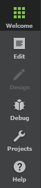
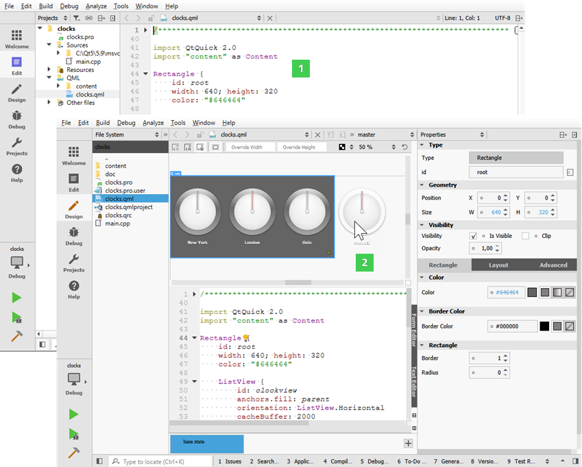

Selecting Modes

The mode selector allows you to quickly switch between tasks such as editing project and source files, designing application UIs, configuring how projects are built and executed, and debugging your applications. To change modes, click the icons, or use the corresponding keyboard shortcut.
To hide the mode selector and to save space on the display, select Window > Mode Selector Style > Hidden. To only show icons on the mode selector, select the Icons Only style.
The following image displays an example application in Edit mode (1) and Design mode (2).

You can use Qt Creator in the following modes:
- Welcome mode for opening projects.
- Edit mode for editing project and source files.
- Design mode for designing and developing application user interfaces. This mode is available for UI files.
- Debug mode for inspecting the state of your application while debugging and for using code analysis tools to detect memory leaks and profile C++ or QML code.
- Projects mode for configuring project building and execution. This mode is available when a project is open.
- Help mode for viewing Qt documentation.
Certain actions in Qt Creator trigger a mode change. Clicking on Debug > Start Debugging > Start Debugging automatically switches to Debug mode.